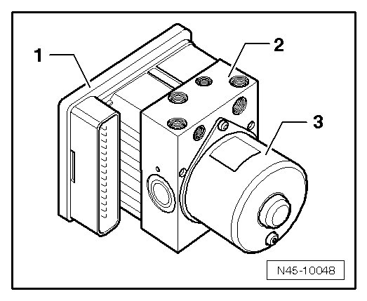
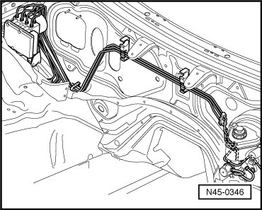

Anti-lock Brake System General Information
Anti-lock Brake System General Information
For Anti-lock Brake System (ABS) Mark 25, only the following version is installed in this vehicle:
• Anti-lock Brake System/Electronic Differential Lock/Acceleration Slip Regulation (ABS/EDL/ASR) with electronic stabilization program (ABS/EDL/ASR/ESP)
The ABS brake system is divided diagonally (two circuits). The vacuum brake servo unit boosts the brakes pneumatically.
Malfunctions on the ABS influence the brake system and servo assist. A change in braking behavior should be checked. When the ABS warning lamp is lit up, the rear wheels may lock prematurely during braking!
Vehicles with ABS Mark 25 do not have a mechanical brake pressure regulator. A specially coordinated software program in the control module determines brake pressure allocation at the rear axle.
Control module - 1 - and hydraulic unit - 2 - comprise a single unit. Separation can only be performed when removed from vehicle. The hydraulic pump - 3 - must not be separated from the hydraulic unit.

New control modules via the replacement parts service are not coded. They must be coded following installation. Refer to --> Code control module using VAS 5051 via "Guided fault finding" function..
ABS layout in left hand drive vehicle.
